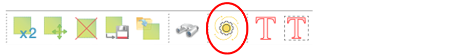

Accueil

| Révision 2 | septembre 2024 |
| Logiciel | WRSimulateur |
| Version | 1.5 portée par WinRelais Studio 2.5.0 (2.5c) |
| Auteur | Frédéric POPEK |
| Editeur | INGEREA |
Objectifs du simulateur
L'objectif du simulateur est de permettre aux utilisateurs de simuler des circuits électriques, électrotechniques et pneumatiques pour un usage pédagogique et de présentation en avant-projet.
Le simulateur permet notamment la simulation d'installations de type SAP (Système Automatisé de Production) en utilisant un automate programmable virtuel ou physique connecté en MODBUS/TCP-IP, couplé à une partie opérative animée.
Le simulateur intègre un modèle de simulation mixte analogique/numérique qui permet la simulation simultanée - de circuits électriques/électrotechniques standards, - de circuits pneumatiques, - d'objets complexes (variateurs de vitesse, relais de sécurité, etc.) - d'automates programmables, - de parties opératives simples
Premiers pas
Ouvrir un exemple
Deux possibiltés:
-
Ouvrir un exemple à partir de WinRelais Fichier>Ouvrir wr-schema/Demonstration Simulateur WinRelais Studio/:

-
Un accès rapide au dossier Demonstration Simulateur WinRelais Studio est construit à l'installation. Il est ainsi possibble de lancer directement WinRelais avec l'exemple sélectionné :
Lancer le simulateur
En cliquant sur l'icône: 
Contrôles réalisés par le simulateur
- Les contrôles réalisés par le simulateur donnent trois niveaux d'avertissement :